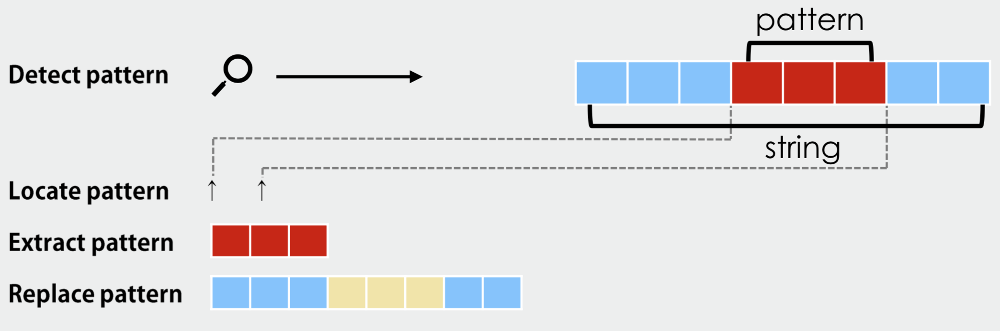
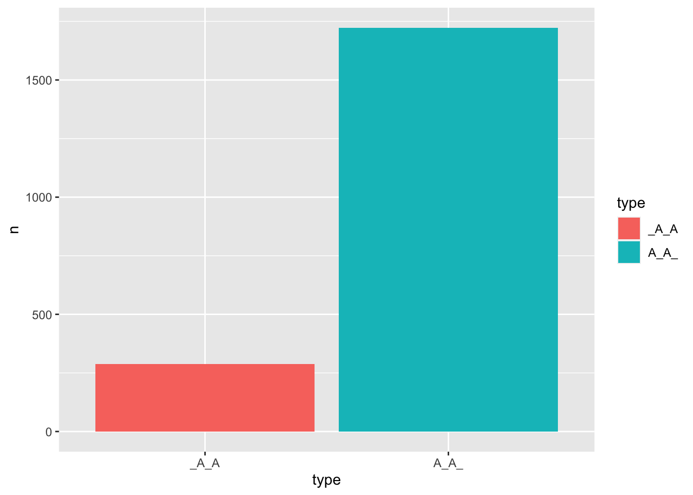

Chapter 9 String Manipulation

In the field of data analysis, a significant portion of the data usually consists of text or strings. As such, it is often necessary to use various techniques for string manipulations such as finding, replacing, removing, combining, or splitting strings.
A comprehensive understanding of string processing is essential for a competent data scientist. One of the most important tools for effective string manipulation is regular expressions, which can be used to match, extract, and manipulate specific patterns within strings.
In this chapter, we will cover several frequently-used techniques for string manipulation, with a particular focus on regular expressions. We will use the stringr package to illustrate the various functions and methods for string manipulation. The stringr package is part of the tidyverse framework, which provides a suite of packages for data wrangling and analysis in R.
9.1 What is Regular Expression?

In text processing, it is common to perform “find-and-replace” operations in documents. This is a routine task in programs like MS-Word or MS-Excel, where specific processing is performed on sets of strings by locating and modifying them.
Regular expressions are a powerful tool in this domain, allowing us to create a schematic textual pattern that can be used to match other strings that fit this pattern. The ability to use one pattern for multiple matches is the beauty of regular expressions.
Regular expressions have several advantages, including:
- Efficient pattern matching
- Checking the format of email addresses, phone numbers, etc.
- Identifying reduplicated strings
- Controlling date format
- Information extraction and text mining
- Extracting texts according to a specific format
- Identifying proper names, email addresses, phone numbers, etc.
The one-to-many mapping nature of regular expressions enables us to retrieve strings with similar properties in a simpler and more coherent way.
Another advantage of regular expressions is that with the knowledge of regular expression and coding capability, you can perform pattern matching tasks on any machine-readable dataset (i.e., corpora) without being limited to the platform created by the corpus provider.
Without regular expression knowledge, every time we need to retrieve patterns from a corpus, we must learn the system-specific syntax for corpus query, which may limit us to what the platform is capable of.
However, it is important to note that access to the full-text corpus data is required, and a licensed use must be obtained beforehand. That’s another issue !)
9.2 String Basics
Before we introduce regular expressions, let’s look at some of the basic string-related functions. Functions from the library stringr often start with str_*(). There are three basic functions:
str_length(): get the length of the string (i.e., number of characters)
[1] 3 4 6str_c(): combine strings into a longer one
[1] "thewordstring"[1] "the_word_string"From the above output, can you tell what is the default value for the argument str_c(..., sep = ...)?
Please note that the following code generates a different result from the above. Can you tell the differences?
How can you create exactly the same results by using str_c(word_string,...)? Please check ?str_c.
[1] "the" "word" "string"Can you predict the outputs of the following code?
- When we have several vectors of the same lengths in the
str_c(), we can use the argumentstr_c(..., sep = ...)to combine each pair of the corresponding elements in the vectors with thesepas the separator.
[1] "a_A" "b_B" "c_C" "d_D" "e_E" "f_F" "g_G" "h_H" "i_I" "j_J" [1] "a/A" "b/B" "c/C" "d/D" "e/E" "f/F" "g/G" "h/H" "i/I" "j/J"- When we have only one vector (but it is a multiple-element character vector) in the
str_c(), we can use the argumentstr_c(..., collpase = ...)to collapse the vector into a long single string with thecollapseas the delimiter of the original vector elements. The default value iscollapse = NULL(i.e.,str_c()by default does not collapse the vector.)
[1] "abcdefghij"[1] "a b c d e f g h i j"[1] "a_b_c_d_e_f_g_h_i_j"- When we have one or more vectors that are of the same lengths in the
str_c(), we can use the argumentstr_c(..., sep = ...., collpase = ...)to collapse the vectors into a long single string, with thesepas the separator for each pair of elements in the vectors, and thecollapseas the delimiter of the paired elements.
[1] "a_A b_B c_C d_D e_E f_F g_G h_H i_I j_J"[1] "a-A/b-B/c-C/d-D/e-E/f-F/g-G/h-H/i-I/j-J"str_sub(): extract part of the string by positions
[1] "inter"Please note that in R most of the functions are vectorized (i.e., if you apply a vectorized function to a vector, it will perform the same operation on each element of the vector and return a new vector with the results.)
## create a vector
set.seed(12)
random_fruits <- sample(fruit, 5) ## `fruit` is a default vector
random_fruits[1] "purple mangosteen" "loquat" "rambutan"
[4] "tangerine" "grape" [1] "pur" "loq" "ram" "tan" "gra"9.3 Regular Expression Grammar
Now let’s look at the grammar of regular expressions in more detail. In this section, we will discuss the standard Perl-compatible regular expression syntax. This is by now the most widely used version of regular expressions in most programming languages.
To start with, in stringr, there is a very useful function, str_view(STRING, PATTERN), which can show us the match of the pattern in the string in a visually intuitive way.
Let’s look at a simple regular expression pattern: ".a". It is a pattern that matches any two-character sequence where the first character can be any character (represented by the period .) and the second character must be “a”.
x <- c("apple", "banana", "pear")
## Show only strings with the match
str_view(string = x, pattern = ".a")[2] │ <ba><na><na>
[3] │ p<ea>r[1] │ apple
[2] │ <ba><na><na>
[3] │ p<ea>rIn the above example, the matches of the (regular) pattern are surrounded by < > in the output of str_view(). Also, we know that the pattern (i.e., .a) exists only in the second and third strings of x.
str_view() has two useful functions:
- to see how a pattern matches
- to print the ambiguous zero-width characters in the string.
[1] │ hello world![1] │ hello{\u3000}world!With str_view(), we can check whether the string contains any unusual whitespace (i.e., all whitespaces apart from " " and "\n"). In the above example, the "\u3000" is a full-width whitespace, often used in Chinese text.
You can also use RegExplain addin to test your regular expressions. RegExplain is a very useful tool for the use of regular expressions–RegExplain, which is an RStudio addin. It allows you to:
- interactively build your regexp and check the output of common string matching functions
- use the included resources to learn regular expressions
- consult the interactive help pages
This is very useful because you can prepare the regular expressions and use them in the code chunk after you have made sure that they work properly in the RegExplain.
You can install the addin using remotes:
## Please install `remotes` if you haven't
install.packages("remotes")
remotes::install_github("gadenbuie/regexplain")
For basic syntax of regular expressions, I will use this str_view() to show you how the regular pattern works in string-matching.
9.3.1 Common String Manipulation Functions
Here are quick definitions for the common string manipulation functions from the stringr package in R:
str_detect(): Detects if a pattern exists in a string. Returns a logical vector indicating if the pattern is found in each string.str_match(): Extracts the first match of a regular expression pattern from each string. Returns a matrix with the matched strings and captured groups.str_match_all(): Extracts all matches of a regular expression pattern from each string. Returns a list of matrices of matches.str_extract(): Extracts the first occurrence of a pattern from each string. Returns a character vector.str_extract_all(): Extracts all occurrences of a pattern from each string. Returns a list of character vectors.str_subset(): Returns the elements of a character vector that contain the pattern.str_replace(): Replaces the first occurrence of a pattern in a string with a specified replacement.str_replace_all(): Replaces all occurrences of a pattern in a string with a specified replacement.
We will talk about these functions in a more detailed way in Section 9.4.
As a quick example, depending on your purpose, we can retrieve different information from each element of x based on the regular expression .a:
[1] FALSE TRUE TRUE [,1] [,2]
[1,] NA NA
[2,] "ba" "b"
[3,] "ea" "e" [[1]]
[,1] [,2]
[[2]]
[,1] [,2]
[1,] "ba" "b"
[2,] "na" "n"
[3,] "na" "n"
[[3]]
[,1] [,2]
[1,] "ea" "e" [1] NA "ba" "ea"[[1]]
character(0)
[[2]]
[1] "ba" "na" "na"
[[3]]
[1] "ea"[1] "banana" "pear" str_replace(string = x, pattern = ".a", replacement = "_") ## Input strings with the first match replaced[1] "apple" "_nana" "p_r" str_replace_all(string = x, pattern = ".a", replacement = "_") ## Input strings with all matches replaced[1] "apple" "___" "p_r" 9.3.2 Metacharacters
To implement the idea of one-to-many mapping, RegEx defines several metacharacters, which are of special use in regular expressions. Their meanings are NOT the same as their literal counterparts.


In RegEx, . is a special character, referring to any character:
[2] │ <ban>ana
[3] │ p<ear>The above regular expression .a. is a pattern that matches any three-character sequence where:
- the first character can be any character (i.e.,
.); - the second character must be
a; - the third character can by any character (i.e.,
.).
What if you need to match the period . symbol literally in your string? In this case, you would need to use an escape character \.
[1] │ <a><p><p><l><e>
[2] │ <b><a><n><a><n><a>
[3] │ <p><e><a><r>
[4] │ <o><r><a><n><g><e><.>< ><A><n><d>In regular expression syntax, the backslash \ is used to indicate that the following character should be treated literally, rather than as a metacharacter.
However, in R, the backslash itself is also a metacharacter. Therefore, to use the backslash as an escape character, you need to double it up, like \\. The first backslash tells the R engine that the second backslash should be taken literally, and the second backslash tells the regular expression engine that the following character should be taken literally as a period.
[1] │ apple
[2] │ banana
[3] │ pear
[4] │ orange<.> AndIn the above example, the . metacharacter matches any character except for a newline character, so it will match all characters in the string. However, in the second example, the \\. regular expression matches only the period character, because the backslash is used to escape the period and tell the regular expression engine to treat it literally.
So, if you have the following three elements in x. How can you identify the double quotes " as the matches in the strings using a regular expression?
my "apple"
banana
apple peel[1] │ my <">apple<">
[2] │ banana
[3] │ apple peel9.3.3 Anchors
RegEx defines a few metacharacters, which serve as anchors in pattern matching. These anchoring metacharacters allow us to find a match in a particular position of the string (e.g., at the beginning/ending of the string).
Most importantly, these anchors are zero-width.

^: The start of the string
[1] │ <ap>ple
[2] │ banana
[3] │ pear$: The end of the string
[1] │ apple
[2] │ bana<na>
[3] │ pearx <- c("apple pie", "apple", "apple cake")
str_view_all(x, "^apple$") ## pattern for five-character match[1] │ apple pie
[2] │ <apple>
[3] │ apple cakeThe anchors are evaluated according to the base unit you are matching (i.e., each string element in the input string vector).
In our previous examples, the RegEx pattern is applied to find a match in each string element of the vector x. The vector includes words. Therefore, the ^ indicates a word-initial position; \$ indicates a word-final position.
If you have a vector of sentences, the ^ would indicate a sentence-initial position; \$ would indicate a sentence-final position. See below:
x <- c("apple is good",
"banana is better than apple",
"an apple a day keeps the doctor away")
str_view_all(x, "^apple")[1] │ <apple> is good
[2] │ banana is better than apple
[3] │ an apple a day keeps the doctor away[1] │ apple is good
[2] │ banana is better than <apple>
[3] │ an apple a day keeps the doctor away9.3.4 Character Set
RegEx also defines a few character sets because in our pattern-matching, the characters included in a set often show similar behaviors. Common predefined character sets include:
\\d: a one-character pattern that matches any digit\\s: a one-character pattern that matches any whitespace (e.g. space, tab, newline)\\w: a one-character pattern that matches any alphanumeric character.: one character pattern that matches any character except the line break

[1] │ apple
[2] │ apple<1><2><3>
[3] │ banana<1>In pattern-matching, very often you will have cases where one base unit may have more than one match. In the previous example, we can see that in the second string apple123, there are three matches of the pattern.
Please compare the two metacharacters, \\w and ., and examine their differences in their matches. In particular, which characters are not included in the character set defined by \\w?
So with these predefined character classes, we can easily identify punctuation, digits, or case-sensitive letters in text:
9.3.5 Alternatives
Section 9.3.4 describes a few predefined character sets in RegEx. We can also define our own character set using square brackets [].
When we want to match a character from a custom set, we place the desired characters or ranges inside []. For example:
[abc]: This defines a one-character pattern that matches eithera,b, orc(an inclusive set).[a-z]: This defines a one-character pattern that matches any lowercase letter fromatoz(a range).[0-9]: This defines a one-character pattern that matches any digit between0and9(another range).
We can also create an exclusive set by using [^...], which matches any character except those specified inside the brackets. Here, the caret ^ has a special meaning only within square brackets. Outside the brackets, it means “start of a string” (i.e., an anchor metacharacter).
[^abc]: This defines a one-character pattern that matches any character excepta,b, orc.
[1] │ <grey> area
[2] │ <gray> areaIf you know very well which characters you are to match/find, use inclusive character sets, i.e., [...]. If you know very well which characters you do NOT like to match/find, use exclusive character sets, i.e., [^...].
For example, what if we would like to find all non-vowel letters in the words? Instead of coming up with an inclusive character set [...], which includes all possible consonant letters, it would be more efficient if you create an exclusive character set, [^aeiou], which suggests that you need any characters that do not belong to vowels.
[1] │ <g><r>e<y>< >a<r>ea
[2] │ <g><r>a<y>< >a<r>eaIn regular expressions, a specific character class to match Chinese characters can be created using the Unicode ranges for Chinese scripts. The general range for Chinese characters (including Simplified and Traditional Chinese) is:
\u4E00-\u9FFF: This range covers most common Chinese characters.\u3400-\u4DBF: This range includes additional characters used in Chinese, mostly historical or rare characters (Extension A).\u20000-\u2A6DF: Covers the supplementary characters used in Chinese (Extension B).
9.3.6 Quantifiers
So far, we have mostly focused on patterns that refer to a single-character sequence, such as \\w, [^aeiou], [aeiou], or a fixed-size sequence (e.g., .a. for three-character sequences, gr[ea]y for four-character sequences). These patterns match a fixed-size sequence, as long as each character in the sequence satisfies the conditions defined by the regular expression.
However, in many cases, we do not know the exact length of the match beforehand. The length of the match can vary, depending on the input data. For example, if we want to find words that start with the letter “a”, we need to create a regular expression that can match strings of variable lengths, (e.g., words of variable lengths with a word-initial “a”).
To specify the number of occurrences of a particular unit in the regular expression (i.e., the character preceding the quantifier), we can use quantifiers. Quantifiers allow us to specify how many times a particular unit (i.e., the character preceding the quantifier) should occur in the input string.
Common quantifiers include:
?: 0 or 1 occurrence of the preceding character+: 1 or more occurrences of the preceding character*: 0 or more occurrences of the preceding character
[1] │ Roman numerals: MD<CC><C>LXXXVIII[1] │ Roman numerals: MDCCCL<XXX>VIIIThe meanings of the above regular expressions are as follows:
CC?: a sequence of variable size where the first character is “C” and it could be followed by 0 or 1 occurrence of “C”.X+: a sequence of variable size consisting of 1 or more occurrences of “X”.
We can specify an exact range of number of occurrences using the curly brackets { , }:
{n}: exactly n occurrences of the preceding character{n,}: n or more occurrences of the preceding character{,m}: at most m occurrences of the preceding character{n,m}: between n and m occurrences of the preceding character
[1] │ Roman numerals: MD<CC>CLXXXVIII[1] │ Roman numerals: MD<CCC>LXXXVIII[1] │ Roman numerals: MD<CCC>LXXXVIIIWhen we use the quantifiers, be very careful about the scope of the quantifier.
By default, all quantifiers take their character that directly precedes them as the base unit to be quantified.
If the quantifier should apply to more than just the preceding character (e.g., a group of characters or an expression), you must use parentheses to group the elements you want to quantify. This way, the quantifier applies to the entire group rather than just the character immediately before it.
[1] │ aa<abbb>ababcdf[1] │ aaabbb<abab>cdf9.3.7 Greedy vs. Non-greedy match
The earlier example, as repeated here, shows you that when the RegEx locates the pattern in the string, it prefers to find a longest match that satisfies the pattern.
[1] │ Roman numerals: MD<CCC>LXXXVIIIIn the above example, the substring CC should have satisfied the RegEx C{2,} already but the RegEx returns CCC as the first match.
This is the idea of greedy match. In other words, by default, when we apply quantifiers in our regular expressions, the RegEx engine assumes a greedy match (i.e., to find a longest possible match).
To cancel this default greedy match, we can add ? after the quantifiers. It applies to all quantifiers we’ve looked at (e.g., ?, +, *).
Before running the following code chunk, please predict their respective outputs.
x <- "Roman numerals: MDCCCLXXXVIII"
str_view(x, "CL?") # find longest match
str_view(x, "CL??") # find shortest match
str_view(x, "CLX+") # find longest match
str_view(x, "CLX+?") # find shortest match
str_view(x, "CLX*") # find longest match
str_view(x, "CLX*?") # find shortest matchPlease make sure not to confuse the two ? metacharacters. When a quantifier ? is coupled with another ?, the first ? specifies 0 or 1 occurrence of the preceding character whereas the second ? indicates a preference for the shortest possible match.
9.3.8 Group and Back-reference
[1] "apple" "apricot" "avocado" "banana" "bell pepper"
[6] "bilberry" "blackberry" "blackcurrant" "blood orange" "blueberry" Let’s take a look at a more complex example now. Suppose we want to extract English fruit names that have a letter repeated twice in a row (e.g., “apple”, “bell pepper”).
The main challenge is that we don’t know which letters will be repeated in the word. In our previous examples, a quantifier requires a specific character (or a character group) as its anchor scope. So how can we construct our regular expression?
Can we use the metacharacter . along with a quantifier {2} to match any possible alphanumeric character that repeats twice, as shown below?
[1] │ <ap><pl>e
[2] │ <ap><ri><co>t
[3] │ <av><oc><ad>o
[4] │ <ba><na><na>
[5] │ <be><ll>< p><ep><pe>r
[6] │ <bi><lb><er><ry>
[7] │ <bl><ac><kb><er><ry>
[8] │ <bl><ac><kc><ur><ra><nt>
[9] │ <bl><oo><d ><or><an><ge>
[10] │ <bl><ue><be><rr>yThe results are not what we have expected. The above regular expression only gives us all two-character sequences from each word. The quantifier {2} in the regular expression only indicates the number of occurrences of its preceding character (i.e., .), but it says nothing about the requirement that the two characters have to be exactly the same.
In other words, the regular expression ".{2}" matches “any two-character sequences”.
To solve the problem of matching English fruit words with a repeated character, we need to introduce the concept of back-reference.
The issue with using . to match any character is that the quantifier alone cannot distinguish between characters that repeat in the word. To address this, we need to ask the RegEx engine to remember the previously matched character and quantify the number of occurrences of the remembered character.
To achieve this, we can use a parenthesis to create a group that captures the previously matched character, and then use a back-reference to refer to that group and ensure that the same character is repeated. For example:
[1] │ a<pp>le
[5] │ be<ll> pe<pp>er
[6] │ bilbe<rr>y
[7] │ blackbe<rr>y
[8] │ blackcu<rr>ant
[9] │ bl<oo>d orange
[10] │ bluebe<rr>yIn this regular expression:
.: matches any character.(.): the parenthesis creates a group to capture the matched character. Internally, the RegEx engine numbers all groups serially from left to right.\\1: This is a back-reference to the first group. The same logic applies to the second group of the regular expression (i.e.,\\2). This back-reference ensures that the second character of the match has to be the same as the previous match (i.e., the same character is repeated).
Therefore, (.)\\1 means that when the RegEx engine matches a character (i.e., . = any character), there must be another occurrence of the same character following it. (Note: This is a regex for two-character matches!)
Exercise 9.1 With the same set of fruit names in x, how do we match fruits with a abab pattern, such as “banana”?
[4] │ b<anan>aExercise 9.2 With the same set of fruit names in x, how do we match fruits with a abba pattern, such as “pepper”?
[5] │ bell p<eppe>rExercise 9.3 With the same set of fruit names in x, please find fruit names which has at least one letter that is the same as their initial letters (of the first word, if the fruit name consists of multiple words.)
[3] │ <avoca>do
[6] │ <bilb>erry
[7] │ <blackb>erry
[10] │ <blueb>erry9.4 Pattern Matching
This section will show you examples of how we can make use of regular expressions to process strings. In stringr, there are a list of verbs that we can use with regular expressions:

In the following example, we use the upper-casing STRING to refer to the character vector to which the PATTERN (i.e., regular expression) is matched.
STRING: a vector of text sequences (e.g.,xwith 10 English fruit names)PATTERN: a regular expression for a match
[1] "apple" "apricot" "avocado" "banana" "bell pepper"
[6] "bilberry" "blackberry" "blackcurrant" "blood orange" "blueberry" 9.4.1 str_detect()
str_detect(STRING, PATTERN): The function can be used to find out which strings inSTRINGhave a match with the givenPATTERN. It returns a binary output, indicating whether each element ofSTRINGhas a match or not.
[1] TRUE FALSE FALSE FALSE FALSE FALSE FALSE FALSE TRUE FALSEIn the above example, the regular expression e$ is used to match the character “e” in the text-final position. As a result, two strings from x that have a match include:
[1] "apple" "blood orange"Also, with the output of str_detect(), we can easily compute the total number of strings that have (at least) one match of the pattern (Please note that this is NOT necessarily the total number of matches!):
[1] 29.4.2 str_subset()
str_subset(STRING, PATTERN): The function can be used to subset theSTRINGby identifying elements that have either a full or partial match of thePATTERN(character). It returns a subset of the originalSTRING.
[1] "apple" "blood orange"Please note that str_subset() in the above example is the same as the following verbose version using str_detect():
[1] "apple" "blood orange"9.4.3 str_extract()
str_extract(STRING, PATTERN): The function can be used to extract the content of the first match of thePATTERNin each string ofSTRING. It returns a character vector including the first match of each string inSTRING.
[1] "a" "a" "a" "a" "e" "i" "a" "a" "o" "u"In the above example, the regular expression [aeiou] is used to match a one-character sequence where the character should be one of the vowel characters (i.e., [aeiou]). The function str_extract() extracts the first occurrence of the match for the specified pattern in each string in STRING. (If there is no match in the string, NA is returned.)
Please compare str_extract() with str_subset() and ensure that you understand their differences.
[1] "apple" "apricot" "avocado" "banana" "bell pepper"
[6] "bilberry" "blackberry" "blackcurrant" "blood orange" "blueberry" A string in STRING may have more than one match. It is therefore important to note that str_extract() only extracts the first match of the string. To extract all matches from the strings, use str_extract_all():
## find all vowel characters from the strings
str_extract(x, "[aeiou]") ## find only the first match of each string [1] "a" "a" "a" "a" "e" "i" "a" "a" "o" "u"[[1]]
[1] "a" "e"
[[2]]
[1] "a" "i" "o"
[[3]]
[1] "a" "o" "a" "o"
[[4]]
[1] "a" "a" "a"
[[5]]
[1] "e" "e" "e"
[[6]]
[1] "i" "e"
[[7]]
[1] "a" "e"
[[8]]
[1] "a" "u" "a"
[[9]]
[1] "o" "o" "o" "a" "e"
[[10]]
[1] "u" "e" "e"In regular expression matching, a string is a sequence of characters that you want to search for a specific pattern (i.e., the regular expression). The pattern is a sequence of characters that define a search pattern.
A match is a sequence of characters in the string that satisfies the specified pattern. Depending on how you structure your regular expression, the match can be either the entire string or a sub-part of it.
When using these functions, it’s important to note whether the returned output is a partial sub-string or the entire string, as this can have important implications in computational text analytics.
[1] "a" "a" "a" NA NA NA NA NA NA NA [1] "apple" "apricot" "avocado" NA NA NA NA
[8] NA NA NA In the above example, the regular expression “^[aeiou]” matches only one character that appears at the beginning of a string and is either an “a”, “e”, “o”, “i”, or “u”. The “^” symbol specifies that the character must appear at the start of the string. The match is always a one-character sequence.
In contrast, the regular expression “^[aeiou].+” matches any sequence of characters (of variable lengths) that begins with one of the vowels “a”, “e”, “o”, “i”, or “u” and is followed by one or more characters of any type (represented by the “.”), regardless of what they are. The “+” symbol specifies that there must be at least one additional character present in the string. The match can be of variable lengths.
9.4.4 str_match()
str_match(STRING, PATTERN): Likestr_extract(),this function can be used to extract the content of the first match of thePATTERNin each string ofSTRING. However, it has an additional functionality: it returns not only the matches but also the capture group. The capture group refers to the characters in the regular expression that are enclosed in parentheses.
[,1] [,2] [,3]
[1,] NA NA NA
[2,] NA NA NA
[3,] NA NA NA
[4,] NA NA NA
[5,] NA NA NA
[6,] NA NA NA
[7,] "bla" "bl" "a"
[8,] "bla" "bl" "a"
[9,] "bloo" "bl" "oo"
[10,] "blue" "bl" "ue"In the above example, the regular expression "(bl)([aeiou]+)" has two parts, or two capture groups, separated by parentheses:
- “
(bl)”: This capture group matches the exact sequence of characters “bl” in the string. - “
([aeiou]+)”: This capture group matches one or more consecutive occurrences of any vowel letter (a, e, i, o, u).
So, when this regular expression is used with a function like str_match() in R, it will search for all matches of the pattern in the input string and return both the matches and the capture groups as a two-dimensional character vector.
We can easily get the vowel sequences from each match:
[1] NA NA NA NA NA NA "a" "a" "oo" "ue"We can compare the results from str_extract():
[1] NA NA NA NA NA NA "bla" "bla" "bloo" "blue"Similarly, if you need information for all the matches from the string (not merely the first match), you need str_match_all():
[[1]]
[,1] [,2] [,3]
[[2]]
[,1] [,2] [,3]
[[3]]
[,1] [,2] [,3]
[[4]]
[,1] [,2] [,3]
[1,] "ba" "b" "a"
[[5]]
[,1] [,2] [,3]
[1,] "be" "b" "e"
[2,] "pe" "p" "e"
[3,] "pe" "p" "e"
[[6]]
[,1] [,2] [,3]
[1,] "bi" "b" "i"
[2,] "be" "b" "e"
[[7]]
[,1] [,2] [,3]
[1,] "be" "b" "e"
[[8]]
[,1] [,2] [,3]
[[9]]
[,1] [,2] [,3]
[[10]]
[,1] [,2] [,3]
[1,] "be" "b" "e" The regular expression “([pb])([aeiou]+)” consists of two capture groups enclosed in parentheses.
- The first capture group “
([pb])” matches either the letter “p” or “b”. - The second capture group “
([aeiou]+)” matches one or more vowels (i.e., “a”, “e”, “i”, “o”, “u”).
Therefore, this regular expression can be used to match any sequence that starts with either “p” or “b”, followed by one or more vowels. Please note that “bell pepper” has three matches and “bilberry” has two matches.
Exercise 9.4 How do you use str_match() to find out all the "c"+Vowel structures, and at the same time identify which vowels follow the letter c?
[2] │ apri<co>t
[3] │ avo<ca>do
[8] │ black<cu>rrant [,1] [,2]
[1,] NA NA
[2,] "co" "o"
[3,] "ca" "a"
[4,] NA NA
[5,] NA NA
[6,] NA NA
[7,] NA NA
[8,] "cu" "u"
[9,] NA NA
[10,] NA NA Exercise 9.5 Please use str_match() to find out all fruit names whose initial letter is a consonant letter (i.e., not any of a, e, i, o, u) and gets repeated in the remaining part of the word.
The following is a sample output from str_match():
- Column 1 refers to the match;
- Column 2 refers to the initial letter;
- Column 3 refers to the letters between the initial letter and the repeated same letter;
- Column 4 refers to the repeated letter, which is the same as the initial letter.
[,1] [,2] [,3] [,4]
[1,] NA NA NA NA
[2,] NA NA NA NA
[3,] NA NA NA NA
[4,] NA NA NA NA
[5,] NA NA NA NA
[6,] "bilb" "b" "il" "b"
[7,] "blackb" "b" "lack" "b"
[8,] NA NA NA NA
[9,] NA NA NA NA
[10,] "blueb" "b" "lue" "b" 9.4.5 str_replace()
str_replace(STRING, PATTERN, REPLACEMENT): The function can be used to replace the first match of thePATTERNin each string withREPLACEMENT.
[1] "Vpple" "Vpricot" "Vvocado" "bVnana" "bVll pepper"
[6] "bVlberry" "blVckberry" "blVckcurrant" "blVod orange" "blVeberry" Similarly, if you want to replace all the matches in the string, use str_replace_all().
[1] "VpplV" "VprVcVt" "VvVcVdV" "bVnVnV" "bVll pVppVr"
[6] "bVlbVrry" "blVckbVrry" "blVckcVrrVnt" "blVVd VrVngV" "blVVbVrry" 9.4.6 str_split()
str_split(STRING, PATTERN): The function can be use to split each string inSTRINGbased on thePATTERN(i.e., using thePATTERNas the delimiter for tokenization).
[1] "apple" "apricot" "avocado" "banana" "bell pepper"
[6] "bilberry" "blackberry" "blackcurrant" "blood orange" "blueberry" [[1]]
[1] "a" "e"
[[2]]
[1] "a" "i" "o" ""
[[3]]
[1] "a" "o" "a" "o"
[[4]]
[1] "" "a" "a" "a"
[[5]]
[1] "" "e" "e" "e" ""
[[6]]
[1] "" "i" "e" ""
[[7]]
[1] "" "a" "e" ""
[[8]]
[1] "" "a" "u" "a" ""
[[9]]
[1] "" "oo" "o" "a" "e"
[[10]]
[1] "" "ue" "e" "" The regular expression “[^aeiou]+” matches any sequence of one or more characters that are not vowels. The str_split() function splits a string into pieces based on a specified pattern. In this case, the function will split each fruit name into multiple pieces (tokens) wherever a sequence of non-vowel characters is found. The resulting output is a list of character vectors, where each vector contains the pieces of the original string that were separated by the non-vowel characters.
Please note that in the above output produced by str_split() there are empty strings. Can you figure out why?
This function is very useful for tokenization in text analytics, i.e., breaking a long string into smaller pieces.
[1] "The birch canoe slid on the smooth planks."
[2] "Glue the sheet to the dark blue background."
[3] "It's easy to tell the depth of a well."
[4] "These days a chicken leg is a rare dish."
[5] "Rice is often served in round bowls." ## Break each sent into tokens
## based on any sequences of non-word characters
str_split(string = y, pattern = "[^\\w]+")[[1]]
[1] "The" "birch" "canoe" "slid" "on" "the" "smooth" "planks"
[9] ""
[[2]]
[1] "Glue" "the" "sheet" "to" "the"
[6] "dark" "blue" "background" ""
[[3]]
[1] "It" "s" "easy" "to" "tell" "the" "depth" "of" "a"
[10] "well" ""
[[4]]
[1] "These" "days" "a" "chicken" "leg" "is" "a"
[8] "rare" "dish" ""
[[5]]
[1] "Rice" "is" "often" "served" "in" "round" "bowls" "" Please note that the return of str_split() is a list. If you prefer a data frame as a return, you can use str_split(..., simplify = TRUE):
fields <- c("Name: Hadley", "Country: NZ", "Age: 35")
## Default list as return
fields %>% str_split("[^\\w]+")[[1]]
[1] "Name" "Hadley"
[[2]]
[1] "Country" "NZ"
[[3]]
[1] "Age" "35" [,1] [,2]
[1,] "Name" "Hadley"
[2,] "Country" "NZ"
[3,] "Age" "35" Exercise 9.6 Convert American dates American.dates to British dates using str_replace_all(). Please note that in your output, you need to preserve the original delimiters for each date.
[1] "31/7/1976" "15.02.1970" "31-11-1986" "01/04.2020"Exercise 9.7 Please use the default sentences vector as your input and find all patterns of “any BE verbs + words ending with ‘en’ or ‘ed’”. Please extract these matches from the sentences and your result should be a vector of these matches, as shown below.
[1] "The birch canoe slid on the smooth planks."
[2] "Glue the sheet to the dark blue background."
[3] "It's easy to tell the depth of a well."
[4] "These days a chicken leg is a rare dish."
[5] "Rice is often served in round bowls." [1] 720 [1] "is often" "were fed" "is used" "was cooked"
[5] "was seized" "is used" "be seen" "was spattered"
[9] "been used" "is red" "was fired" "is ten"
[13] "be used" "is used" "are pushed" "are men"
[17] "are used" "were hired" "was covered" "be turned"
[21] "were lined" "was ten" "is used" "are paved"
[25] "is carved" "were led" "is needed" "be needed"
[29] "were painted" "were mailed" "was pressed" "is seen"
[33] "was packed" "be shipped" "was barred" "was crowded"
[37] "was carved" "was drilled" "was hidden" "was seen"
[41] "were pierced" "are jangled" "is tinged" "be tilted"
[45] "be shortened" "were stamped" "was jammed" "was robbed" [1] │ Rice <is often> served in round bowls.
[2] │ The hogs <were fed> chopped corn and garbage.
[3] │ A rod <is used> to catch pink salmon.
[4] │ The meal <was cooked> before the bell rang.
[5] │ The walled town <was seized> without a fight.
[6] │ A Tusk <is used> to make costly gifts.
[7] │ The wharf could <be seen> at the farther shore.
[8] │ Mud <was spattered> on the front of his white shirt.
[9] │ The pencils have all <been used>.
[10] │ The sofa cushion <is red> and of light weight.
[11] │ The new girl <was fired> today at noon.
[12] │ There the flood mark <is ten> inches.
[13] │ Corn cobs can <be used> to kindle a fire.
[14] │ The lure <is used> to catch trout and flounder.
[15] │ They <are pushed> back each time they attack.
[16] │ They <are men> who walk the middle of the road.
[17] │ Fruit flavors <are used> in fizz drinks.
[18] │ Nine men <were hired> to dig the ruins.
[19] │ The old pan <was covered> with hard fudge.
[20] │ The last switch cannot <be turned> off.
... and 27 moreNote: Because now we do not have the information of part-of-speech tags, please ignore the false positives (e.g., “Rice <is often> served in round bowls”, “They <are men> who walk the middle of the road”) for the moment. But all your matches should still be legitimate words in English. If your regular expressions inaccurately identify the following tokens as matches, you must fix your regular expression to remove these inaccurate tokens:
Exercise 9.8 Please create a regular expression to extract all word tokens of the sentences from the vector x, which is defined as follows.
The returned object is a list, including the word vectors of each text in x.
[[1]]
[1] "It's" "a" "three-legged" "char"
[[2]]
[1] "The" "book" "you" "read" "was" "quite" "boring"Exercise 9.9 In stringr::sentences, there are 720 English sentences. Please create a regular expression to subset sentences with at least one word containing a hyphen - or an apostrophe '. There are 19 sentences with at least one match.
Your regular expression should match the entire word string with the symbol.
[3] │ <It's> easy to tell the depth of a well.
[18] │ The soft cushion broke the <man's> fall.
[104] │ Open the crate but <don't> break the glass.
[180] │ Add the <store's> account to the last cent.
[270] │ A zestful food is the <hot-cross> bun.
[303] │ The beam dropped down on the <workman's> head.
[308] │ <Let's> all join as we sing the last chorus.
[326] │ The copper bowl shone in the <sun's> rays.
[348] │ A <child's> wit saved the day for us.
[357] │ A ripe plum is fit for a <king's> palate.
[393] │ <It's> a dense crowd in two distinct ways.
[477] │ We <don't> get much money but we have fun.
[513] │ Ripe pears are fit for a <queen's> table.
[536] │ Cheap clothes are flashy but <don't> last.
[624] │ The facts <don't> always show who is right.
[636] │ Pack the kits and <don't> forget the salt.
[678] │ We <don't> like to admit our small faults.
[680] │ Dig deep in the earth for <pirate's> gold.
[713] │ She saw a cat in the <neighbor's> house. [1] "It's" "man's" "don't" "store's" "hot-cross"
[6] "workman's" "Let's" "sun's" "child's" "king's"
[11] "It's" "don't" "queen's" "don't" "don't"
[16] "don't" "don't" "pirate's" "neighbor's"Exercise 9.10 Please extract all the word tokens that are tagged as NOUNS from the following text using a self-defined regular expressions. NOUNS are defined as words with parts-of-speech tags starting with N.
x <- "中央(Nc) 流行(VH) 疫情(Na) 指揮(VC) 中心(Nc) 醫療(VC) 應變組(Nc) 副組長(Na) 羅一鈞(Nb) 今天(Nd) 說明(VE) ，(COMMACATEGORY) 截至(P) 12月(Nd) 1日(Nd) 全球(Nc) 累計(VJ) 至少(Da) 27(Neu) 國(Nc) 、(PAUSECATEGORY) 共有(VJ) 370(Neu) 例(Na) 確診(VA) 感染(VJ) Omicron(FW) 變異株(Na) ，(COMMACATEGORY) 多(D) 來自(VJ) 南非(Nc) 或(Caa) 具(VJ) 非洲(Nc) 國家(Na) 旅遊史(Na) 。(PERIODCATEGORY)"[[1]]
[1] "中央(Nc)" "疫情(Na)" "中心(Nc)" "應變組(Nc)" "副組長(Na)"
[6] "羅一鈞(Nb)" "今天(Nd)" "12月(Nd)" "1日(Nd)" "全球(Nc)"
[11] "27(Neu)" "國(Nc)" "370(Neu)" "例(Na)" "變異株(Na)"
[16] "南非(Nc)" "非洲(Nc)" "國家(Na)" "旅遊史(Na)"Exercise 9.11 Please use the same Chinese texts as the input. Please use str_replace_all() along with a self-defined regular expression to remove all part-of-speech tags in the original texts.
x <- "中央(Nc) 流行(VH) 疫情(Na) 指揮(VC) 中心(Nc) 醫療(VC) 應變組(Nc) 副組長(Na) 羅一鈞(Nb) 今天(Nd) 說明(VE) ，(COMMACATEGORY) 截至(P) 12月(Nd) 1日(Nd) 全球(Nc) 累計(VJ) 至少(Da) 27(Neu) 國(Nc) 、(PAUSECATEGORY) 共有(VJ) 370(Neu) 例(Na) 確診(VA) 感染(VJ) Omicron(FW) 變異株(Na) ，(COMMACATEGORY) 多(D) 來自(VJ) 南非(Nc) 或(Caa) 具(VJ) 非洲(Nc) 國家(Na) 旅遊史(Na) 。(PERIODCATEGORY)"[1] "中央 流行 疫情 指揮 中心 醫療 應變組 副組長 羅一鈞 今天 說明 ， 截至 12月 1日 全球 累計 至少 27 國 、 共有 370 例 確診 感染 Omicron 變異株 ， 多 來自 南非 或 具 非洲 國家 旅遊史 。"9.5 Advanced Pattern Matching
Lookahead Assertion
The regular expressions we have covered so far are designed to match patterns within an input string, and as a result, they will consume the input string during the pattern matching process.
In regular expression matching, consuming characters refers to the process where the regular expression engine reads and matches characters in the input string. When a regular expression is applied to a string, the pattern matching engine moves through the string character by character, trying to find a match for the pattern. As the matching progresses, the engine consumes the characters in the input string that it has already matched.
It is important to note that once the engine has consumed a character in the input string, it cannot be reused for a subsequent match. This means that the same character cannot be part of two overlapping matches.
To help explain this concept, let’s look at a simple example. If we want to find the word Windows in a string only when it is followed by "95, 98, NT, 2000", we may use the regular expression “Windows(95|98|NT|2000)”:
win <- c("Windows2000", "Windows", "WindowsNT", "Windows7", "Windows10")
str_view(win, "Windows(95|98|NT|2000)")[1] │ <Windows2000>
[3] │ <WindowsNT>The regular expression in the above example matches “Windows” followed by any of the specified version numbers. However, it will also consume the version number, resulting in matches that include irrelevant characters such as “Windows2000” or “WindowsNT”.
This can be a problem when we need to replace the matched pattern with a different string. That is, it can be problematic when we need to replace the word “Windows” with “OldSystem” but only when “Windows” is followed by "95, 98, NT, 2000":
[1] "OldSystem" "Windows" "OldSystem" "Windows7" "Windows10"Now you see the problem? Not only “Windows” was replaced, but also the entire string. This is not what we have expected to get. Instead, we would expect something like:
[1] "OldSystem2000" "Windows" "OldSystemNT" "Windows7"
[5] "Windows10" To solve this problem, we can use the lookahead assertion in regular expression.
PATTERN(?=...): This positive lookahead assertion is used to match aPATTERNonly when it is followed by the specified lookahead pattern(?=...).PATTERN(?!...): This negative lookahead assertion is used to match aPATTERNonly when it is NOT followed by the specified lookahead pattern(?!...).
The key is that the lookahead assertion does not consume characters in the match processing.
[1] │ <Windows>2000
[3] │ <Windows>NTIn the above regular expression, the (?=95|98|NT|2000) is a positive lookahead assertion. The entire regular expression is used to match the string Windows only when it is followed by the specified lookhead pattern (i.e., any of the following strings, “95”, “98”, “NT”, “2000”), but it does not consume the characters in the lookahead assertion.
This way, when we replace the matched pattern with a different string, we only replace the “Windows” part and leave the version number unchanged.
[1] "OldSystem2000" "Windows" "OldSystemNT" "Windows7"
[5] "Windows10" Similarly, we can use a negative lookahead assertion as well:
[1] │ <Windows>2000
[2] │ <Windows>
[3] │ <Windows>NT[1] "NewSystem2000" "NewSystem" "NewSystemNT" "Windows7"
[5] "Windows10" Look-behind Assertion
In addition to lookahead assertion, we can also specify look-behind assertions:
(?<=...)PATTERN: This positive look-behind assertion can be used to match aPATTERNonly when it is preceded by the specified look-behind pattern(?<=...).(?<!...)PATTERN: This negative look-behind assertion can be used to match aPATTERNonly when it is NOT preceded by the specified look-behind pattern(?<=...).
Let’s look at a simple example:
dollars <- c("NT$200", "US$200", "EURO$200", "POUND$200", "$200")
str_replace_all(dollars,
"(?<=NT|US)\\$200",
"****")[1] "NT****" "US****" "EURO$200" "POUND$200" "$200" In the above example, we replace the dollar numbers “$200” with “****” only when they are preceded by “NT” or “US”. Below is an example of negative look-behind assertion.
dollars <- c("NT$200", "US$200", "EURO$200", "POUND$200", "$200")
str_replace_all(dollars,
"(?<!NT|US)\\$200",
"****")[1] "NT$200" "US$200" "EURO****" "POUND****" "****" Do you know why in the above regular expressions we have to include “\” before the dollar sign “$”?
Exercise 9.12 Please use the first ten words in the fruit vector for this exercise. Based on the fruit vocabulary, can you identify all the a that is followed by STOP_SOUNDS and replace them with “V”?
STOP_SOUNDS refer to the following letters: p, t, k, b, d, g
Hint: str_replace_all()
- dataset
[1] "apple" "apricot" "avocado" "banana" "bell pepper"
[6] "bilberry" "blackberry" "blackcurrant" "blood orange" "blueberry" - target matches
[1] │ <a>pple
[2] │ <a>pricot
[3] │ avoc<a>do
[4] │ banana
[5] │ bell pepper
[6] │ bilberry
[7] │ blackberry
[8] │ blackcurrant
[9] │ blood orange
[10] │ blueberry- your result
[1] "Vpple" "Vpricot" "avocVdo" "banana" "bell pepper"
[6] "bilberry" "blackberry" "blackcurrant" "blood orange" "blueberry" Exercise 9.13 Similar to the previous example, Exercise 9.12, also based on the first ten words in fruit, please identify all the vowels that are both followed and preceded by STOP_SOUNDS and replace them with “V”.
Vowels are defined as letters including a, e, i, o,and u,
- dataset
[1] "apple" "apricot" "avocado" "banana" "bell pepper"
[6] "bilberry" "blackberry" "blackcurrant" "blood orange" "blueberry" - target matches
[1] │ apple
[2] │ apricot
[3] │ avocado
[4] │ banana
[5] │ bell p<e>pper
[6] │ bilberry
[7] │ blackberry
[8] │ blackcurrant
[9] │ blood orange
[10] │ blueberry- your result
[1] "apple" "apricot" "avocado" "banana" "bell pVpper"
[6] "bilberry" "blackberry" "blackcurrant" "blood orange" "blueberry" 9.6 Recap
To summarize, when creating a regular expression, you may consider the following questions:
- For each character in the match, is it a literal character or does it belong to a limited character class?
- You can use character sets and classes to match specific characters or ranges of characters.
- Is the pattern you are matching a fixed size or variable size?
- You can use quantifiers to indicate how many times a character or group of characters can appear in the match.
- Are there any repeated characters in your match that you want to capture and refer to later?
- You can use capture groups and back-references to reference a previously matched group in your expression.
Therefore, three important steps:
- Determine if each character in the match is a literal character/string or falls into a limited character class. This will help you decide if you need to use a character set/class.
- Determine if the potential match is a fixed size or a variable size. This will help you decide if you need to use quantifiers.
- Determine if there are any repeated characters in the match. This will help you decide if you need to use capture groups and back-references.
9.7 More Practices
In this section, we will explore more examples of the practical applications of regular expressions. Specifically, we will focus on how regular expressions can be used to manipulate datasets, taking advantage of their powerful capabilities and potential for text processing.
In Chapter 8, we have talked about important ways in which we can manipulate our data as a data.frame. Please refer to the Chapter 8 for a review of the important verbs in dplyr.
In the library tidyr, there are three very useful functions for data manipulation: separate(), extract() and unnest(). Please read the documentations of these three functions and run the examples provided in the documentation to make sure that you understand how they work.
separate(): This function separates a single column into multiple columns based on a specified separator (which can be specified by regluar expression).extract(): This function extracts values from a single column based on a specified regular expression pattern and creates new columns with those extracted values.unnest(): This function expands a column that contains a list of values into multiple rows.
9.7.1 Case 1
If we have a data frame like dt below, how do we extract only the numbers of the weeks from the y column, and add this information to a new column, z?
Original data frame:
Expected data frame:
Hints:
- We need to create a regular expression to extract numbers from the strings in
ycolumn. - We need to create a new column for the data frame
df.
Exercise 9.14 If we have a data frame like df below, how do we extract all the vowels of the words in the WORD column and create two additional columns:
- Because a word may have several vowels, create a new column, which shows all the vowels in the word by combining them into a long string with the delimiter “_”
- Create another column for the number of vowels for each word
Vowels are defined as [aeiou].
9.7.2 Case 2
How to separate the English and Chinese strings in x column and create two new columns, EN, CH?
Original data frame:
Expected data frame:
Hints:
- Please check
tidyr::extract(), which is a function to split a column into several columns using regular expression. - We need to create regular expression to extract alphanumeric (or non-alphanumeric) characters from the values of
xcolumn. - In the regular expression, one capture group matches the values for EN column and the other capture group matches the values for the CH column.
9.7.3 Case 3
How to extract all the individual digits of each token, compute the sum of the numbers, and save the results in a new column SUM?
Original data frame:
Expected data frame:
Hints:
- We need to know how to extract all digits in
x. - We need to know how to compute the sum of the digits in
x. - We need to add these sums to the new column.
- You may check the use of
unnest().
Exercise 9.16 How to extract all the numbers that follow a upper-casing letter? For example, 34 after W; 217 after B?
Original data frame:
Expected data frame:
Exercise 9.17 Based on Exercise 9.16, can you add another column to the resulting data frame, which records the upper-casing letter that the numbers follow for each row?
9.8 Case Study: Chinese Four-Character Idioms
Many studies have shown that Chinese speakers make use of large proportion of four-character idioms (四字成語) in discourse. Let’s have an exploratory analysis of four-character idioms in Chinese.
9.8.1 Dictionary Entries
In our demo_data directory, there is a file demo_data/dict-ch-idiom.txt, which includes a list of four-character idioms in Chinese. These idioms are collected from 搜狗輸入法詞庫 and the original file formats (.scel) have been combined, removed of duplicate cases, and converted to a more machine-readable format, i.e., .txt.
Let’s first load the idioms dataset in R.
## Loading file
all_idioms <- readLines(con = "demo_data/dict-ch-idiom.txt",encoding = "UTF-8")
## Checking first 6 tokens
head(all_idioms)[1] "阿保之功" "阿保之勞" "阿鼻地獄" "阿鼻叫喚" "阿斗太子" "阿芙蓉膏"[1] "罪無可逭" "罪人不帑" "作纛旗兒" "坐纛旂兒" "作姦犯科" "作育英才"[1] 56536In order to make use of the tidy structure in R, we convert the vector into a data.frame (i.e., each row refers to one particular idiom type):
9.8.2 Case Study: X來Y去
We can create a regular expression pattern to extract all idioms with the format of X來Ｙ去:
To analyze the meaning of this constructional schema, we can extract the characters in X and Y slots of the schema:
## Version 1
idiom_laiqu <-idiom %>%
filter(str_detect(IDIOMS, ".來.去")) %>%
mutate(PATTERN = str_replace(IDIOMS, "(.)來(.)去", "\\1_\\2")) %>%
separate(PATTERN, into = c("W1", "W2"), sep = "_")
idiom_laiqu# ## version 2
# require(tidyr)
# idiom %>%
# filter(str_detect(string, ".來.去")) %>%
# mutate(string2 = string) %>%
# extract(col="string2",
# into=c("w1","w2"),
# regex = "(.)來(.)去")One empirical question is how many of these idioms are of the pattern W1 = W2 (e.g., 想來想去, 直來直去) and how many are of the pattern W1 != W2 (e.g., 說來道去, 朝來暮去):
# Create `structure` column
idiom_laiqu_2 <- idiom_laiqu %>%
mutate(STRUCTURE = ifelse(W1==W2, "XX","XY"))
idiom_laiqu_2 # Count `structure` frequecnies
idiom_laiqu_count <- idiom_laiqu_2 %>%
count(STRUCTURE)
idiom_laiqu_count
##########################
### Another alterantive###
##########################
# idiom_laiqu %>%
# mutate(STRUCTURE = ifelse(W1==W2, "XX","XY")) %>%
# count(STRUCTURE) %>%
# ggplot(aes(STRUCTURE, n, fill = STRUCTURE)) +
# geom_col()Exercise 9.18 Please use same dataset idiom (loaded from demo_data/dict-ch-idiom.txt) and extract all the idioms that fall into the schema of 一X一Y.
Exercise 9.19 Also, with the idiom as our data, if we are interested in all the idioms that have duplicated characters in them, with schemas like either _A_A or A_A_, where A is a fixed character. How can we extract all idioms of these two types from idiom?
Please visualize the distribution of the two idiom types using a bar plot.
Sample answers have been provided below.
- Idioms with duplicate characters in them
- Type Distribution

Exercise 9.20 Following Exercise 9.19, for each type of the idioms (i.e., “A_A_” or “_A_A”), please provide their respective proportions of W1 = W2 vs. W1 != W2, where W1 and W2 refer to the words filled in the variable slots (“_”) of the idiomatic templates.
- The following table is a random sample of each idiom type (5 tokens for each type) (Not sure if you can get the exact sample results with
set.seed(123)):